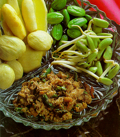

น้ำพริกระกำนับเป็นอาหารที่นิยมอย่างหนึ่งในช่วงฤดูร้อน ขณะที่มะนาวขาดแคลน ระกำซึ่งเป็นผลไม้พื้นเมืองก็ออกผล คนใต้จึงนิยมประยุกต์ใช้รสเปรี้ยวจากระกำแทนมะนาว นำมาทำน้ำพริกรับประทานกับผักต่าง ๆ น้ำพริกระกำจะมีรสชาติที่เป็นเอกลักษณ์เฉพาะ นอกจากจะมีรสชาติเปรี้ยวเค็มหวานอย่างกลมกล่อมแล้ว ยังมีกลิ่นหอมของระกำเจืออยู่ด้วย คนใต้นิยมรับประทานคู่กับลูกเนียงซึ่งมีกลิ่นฉุน เมื่อรับประทานคู่กันยิ่งทำให้เพิ่มรสชาติในการรับประทานยิ่งขึ้น นับเป็นของคู่กันเลยทีเดียว
ระกำปอกเปลือกขูดเอาแต่เนื้อ 300 กรัม
กะปิ 10 กรัม
กุ้งแห้ง 40 กรัม
กระเทียม 5 กรัม
พริกขี้หนู 15 กรัม หรือ 2 ช้อนชา
น้ำตาลทราย 150 กรัม
1. ใช้ใบตองห่อกะปิย่างไฟให้หอม
2. โขลกกะปิ กระเทียม กุ้งแห้ง พริกขี้หนู น้ำตาลทราย
3. ใส่ระกำ โขลกให้เข้ากัน
4. เสริ์ฟพร้อมผักเหนาะ เช่น ถั่วฝักยาว, สะตอ, กระถิน เป็นต้น
น้ำพริกระกำ เป็นน้ำพริกที่เพิ่มรสชาติของผักเหนาะให้รับประทานได้มากยิ่งขึ้น การรับประทานผักมาก ๆ และหลายชนิด ช่วยให้ร่างกายได้คุณค่าทางอาหารรวมตลอดถึงวิตามินครบถ้วน